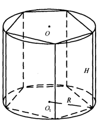
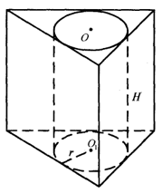
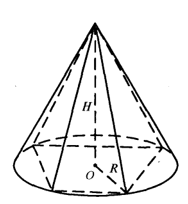
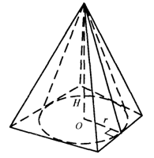
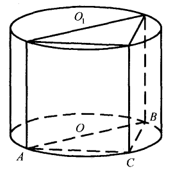
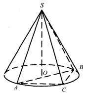
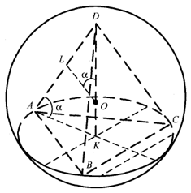
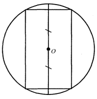
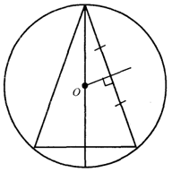
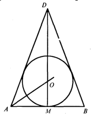

Тема. Види комбінацій тіл.
Призма, вписана в циліндр і описана навколо нього

Означення 1. Призмою, вписаною у циліндр, називається така призма, у якої площинами основ є площини основ циліндра, а бічними ребрами — твірні циліндра.
Якою має бути призма, щоб її можна було вписати в циліндр?
Оскільки циліндр є прямим, то і призма має бути прямою, за означенням її ребра збігаються з твірними циліндра; основою призми має бути многокутник, який можна вписати в коло.
Отже, якщо призма є паралелепіпедом, то обов'язково прямокутним, якщо в основі призми лежить трапеція, то ця трапеція — рівнобічна. Радіус кола основи циліндра є радіусом кола, описаного навколо многокутника основи призми.

Означення 2. Призмою, описаною навколо циліндра, називається призма, у якої площинами основ є площини основ циліндра, а бічні грані дотикаються до циліндра.
Якою має бути призма, щоб її можна було описати навколо циліндра?
Призма має бути прямою, в її основі повинен лежати многокутник, у який можна вписати коло. Якщо це чотирикутник, то суми його протилежних сторін рівні. Якщо цей многокутник — паралелограм, то обов'язково — ромб. Радіус кола основи циліндра є радіусом кола, вписаного в основу призми.
Оскільки навколо довільного трикутника і будь-якого правильного многокутника можна описати коло і в будь-який трикутник та правильний многокутник можна вписати коло, то будь-яку пряму трикутну і будь-яку правильну призму можна вписати в циліндр і описати навколо нього.
Піраміда, вписана в конус і описана навколо нього

Означення 3. Пірамідою, вписаною в конус, називається така піраміда, основою якої є многокутник, вписаний у коло основи конуса, а вершиною — вершина конуса.
Бічні ребра піраміди, вписаної в конус, є твірними конуса, тому вони рівні. Висоти конуса і піраміди збігаються на основі єдиності прямої, перпендикулярної до площини і проведеної через точку, що не лежить у даній площині. Отже, вершина піраміди лежить на перпендикулярі, проведеному через центр описаного навколо многокутника основи кола, тому всі бічні ребра рівні і утворюють з основою та висотою піраміди однакові кути.

Означення 4. Пірамідою, описаною навколо конуса, називається піраміда, в основі якої лежить многокутник, описаний навколо основи конуса, а вершина збігається з вершиною конуса.
Площини бічних граней описаної піраміди є дотичними площинами до конуса, тому лінією дотику є пряма, якій належить висота бічної грані піраміди, що збігається з твірною конуса. Радіус вписаного в основу піраміди кола перпендикулярний до сторін многокутника, який лежить в основі піраміди і є проекцією твірної конуса на площину основи. Всі бічні грані піраміди мають рівні висоти і утворюють з основою рівні двогранні кути.
Отже, будь-яку правильну піраміду і піраміду з рівними ребрами та кутами, які бічні ребра утворюють з основою піраміди, можна вписати в конус.
Будь-яку правильну піраміду і піраміду з рівними двогранними кутами при основі або рівними висотами бічних граней можна описати навколо конуса.
Задача 1. У циліндр вписано трикутну призму. АС = 12 cм, BC= 16 см, висота призми дорівнює 10 см. Знайти площу бічної поверхні циліндра.

Розв'язання
Призму вписано в циліндр, тому Δ АВС є вписаним у коло, центр якого за умовою лежить на стороні АВ трикутника. Отже, Δ АВС — прямокутний, АВ — його гіпотенуза, а радіус основи циліндра дорівнює радіусу описаного навколо Δ АВС кола, тобто \(\frac{1}{2}\)АВ. АВ = 20 см, бо сторони даного трикутника пропорційні до сторін єгипетського трикутника. Тому радіус основи циліндра R = 10 см. Висота циліндра дорівнює висоті призми, тобто 10 см. Площа бічної поверхні циліндра обчислюється за формулою Sб = 2πRH .
Отже, Sб = 2π·10·10 = 200π (см2).
Відповідь. Sб = 200π см2.

Задача 2. Піраміду SABC вписано в конус. Що можна сказати про вид трикутника АВС? Назвати кути, які утворюють твірні з площиною основи конуса. Що можна сказати про міри цих кутів? Знайти радіус кола основи конуса, якщо <ACB = α і АВ = а.
Розв'язання
Піраміду вписано в конус, основою О його висоти є центр описаного навколо Δ АВС кола. Точка О (за умовою) лежить поза трикутником, тому Δ АВС тупокутний, <АСВ — тупий. SO (АВС) . ОС є проекцією SC на площину АВС, тому кут, який утворює твірна SC з основою, є <SCO. Аналогічно твірні SA і SB утворюють з основою кути SAO і SBО, всі ці кути рівні між собою.
Радіус основи конуса дорівнює радіусу кола, описаного навколо ΔАВС, тобто \(R=\frac{AB}{2sinACB}=\frac{a}{2sin\alpha}\).
Відповідь. \(R=\frac{a}{2sin\alpha}\).
Тема. Многогранники і тіла обертання, вписані в кулю.
Многогранник, вписаний у кулю
Означення 1. Многогранник називається вписаним у кулю, якщо всі його
вершини лежать на поверхні кулі. Тоді куля є описаною навколо многогранника.
Площина кожної грані многогранника перетинає кулю по кругу, тому кожна грань має бути многокутником, який можна вписати в коло.
Коли можна вписати в кулю призму?
У кулю можна вписати призму, в основі якої лежить многокутник, навколо якого можна описати коло. Призма має бути прямою. Будь-яку пряму трикутну і будь-яку правильну призму можна вписати в кулю.
Де лежить центр кулі, описаної навколо призми?
Шуканий центр кулі є точкою, рівновіддаленою від усіх вершин призми. Геометричне місце точок, рівновіддалених від усіх вершин нижньої (верхньої) основи призми, є перпендикуляр до цієї основи, що проходить через центр кола, описаного навколо неї. Основи призми рівні, тому площини їх перерізів лежать на однаковій відстані від центра. Отже, центр кулі, описаної навколо призми, є серединою відрізка, проведеного перпендикулярно до її основ з кінцями у центрах кіл, описаних навколо цих основ.
Коли можна вписати в кулю піраміду або кулю описати навколо піраміди?
Основою піраміди має бути многокутник, навколо якого можна описати коло. Центр кулі є точкою, рівновіддаленою від усіх вершин піраміди, тому він лежатиме на перпендикулярі, проведеному до многокутника основи через центр описаного навколо нього кола. Якщо всі бічні ребра піраміди рівні або нахилені до основи під однаковими кутами, то висота піраміди лежатиме на цьому перпендикулярі.
Геометричне місце точок простору, рівновіддалених від кінців ребра, є площина, що проходить перпендикулярно до цього ребра через його середину. Отже, центр кулі, описаної навколо піраміди, є точкою перетину перпендикуляра, проведеного через центр описаного навколо многокутника основи кола, і серединного перпендикуляра до бічного ребра, проведеного в площині, що проходить через перпендикуляр до основи піраміди.
Очевидно, що будь-яку трикутну і будь-яку правильну піраміду можна вписати в кулю.
Зауваження. Під час розв'язування задач достатньо вказати положення центра кулі без її зображення.
Задача 2. У кулю вписано правильну трикутну піраміду з бічним ребром l, що нахилене до основи піраміди під кутом α . Знайти площу поверхні кулі.

Розв'язання
Оскільки піраміда правильна, то центр О кулі є точкою перетину висоти DO і серединного перпендикуляра LΟ до бічного ребра DA у площині ADK.
У DLO: <DLO=90º, <LOD=α, LD=\(\frac{1}{2}\)l,
OD – радіус кулі. \(OD=\frac{l}{2sin\alpha}\); Sсф. = 4πR2;
\(S_{сф.}=4\pi\frac{l^2}{4sin^2\alpha}=\frac{\pi l^2}{sin^2\alpha}\)
Відповідь. Площа поверхні кулі \(\frac{\pi l^2}{sin^2\alpha}\).

Тіла обертання, вписані у кулю
Якщо обертати прямокутник, вписаний у коло, навколо осі, перпендикулярної до основи, одержимо циліндр, вписаний у кулю.

Якщо обертати рівнобедрений трикутник, вписаний у коло, навколо осі, перпендикулярної до основи, одержимо конус, вписаний у кулю.
Розв'язуючи задачі, можна виконувати тільки зображення осьового перерізу одержаної фігури. Положення центра кулі визначається аналогічно до того, як це робили, визначаючи центр кулі, описаної навколо призми (піраміди).
Тема. Куля, вписана у многогранник або тіло обертання.
Куля, вписана в многогранник
Означення. Куля називається вписаною у многогранник, якщо її поверхня дотикається до всіх граней многогранника.
Многогранник у такому разі називається описаним навколо кулі.
Якщо кулю вписано в пряму призму, то висота призми дорівнює діаметру кулі. Центром кулі є середина відрізка, що сполучає центри кіл, вписаних у основи призми.
Куля, вписана в піраміду
Центр кулі рівновіддалений від усіх його граней, тобто є точкою перетину півплощин, які проведені через ребра двогранних кутів, утворених двома суміжними гранями, і ділять цей кут навпіл. Якщо піраміда правильна, то всі двогранні кути при основі та всі двогранні кути, утворені суміжними бічними гранями, — рівні. Висота піраміди проходить через центр вписаного в основу піраміди кола. Центр кулі є точкою перетину висоти з бісектрисою лінійного кута двогранного кута при основі піраміди, утвореного апофемою і радіусом вписаного в основу піраміди кола.
Куля, вписана в циліндр (конус)
Якщо обертати круг, вписаний у квадрат, навколо осі симетрії цієї фігури, то утвориться куля, вписана в циліндр. Циліндр, у який вписано кулю, — рівносторонній. Центр кулі є серединою відрізка, що сполучає центри верхньої і нижньої основ циліндра.
Якщо обертати рівнобедрений трикутник з вписаними у нього колом навколо осі симетрії, то утвориться конус, у який вписано кулю. Центром кулі, вписаної в конус, є точка перетину його висоти з бісектрисою кута нахилу твірної до основи конуса.
Розв'язуючи задачі на комбінації кулі з круглими тілами, доцільно розглядати не всю конструкцію, а лише її осьовий переріз.
Задача 3. Кулю вписано в конус. Радіус основи конуса дорівнює 6 см, висота — 7 см, а твірна дорівнює 8 см. Знайти об'єм кулі.
Розв'язання

ΔΑВD — осьовий переріз конуса, ΜΑ — радіус його основи, DM — висота конуса, DA — його твірна.
AM — проекція AD на площину основи конуса, тому ∠DAM є кутом нахилу твірної DA до основи. У площині DAM проведемо бісектрису АО кута DAM. Вона перетне висоту DM у точці О, яка і є центром вписаної в конус кулі.
ОМ\(\perp\)А В , ОМ — радіус кулі. За властивістю бісектриси DO : ОМ = AD : AM.
ОМ = r, DO = 7 - r, тому \(\frac{7-r}{r}=\frac{8}{6}\) , r = 3 см.
Об'єм V кулі, вписаної в конус, знайдемо за формулою: V = \(\frac{4}{3}\)πr3, де r – радіус кулі.
V=\(\frac{4}{3}\)π·33 =36π (см3).
Відповідь. V = 36π см3.